Para este juego necesitaremos varios objetos. Empezaremos por la pantalla inicial donde pondremos una imagen
de Kong.
Para colocar sobre el fondo del mapa del juego, necesitaremos un objeto con todas las plataformas y otro con
todas las escaleras, para saber cuándo se está sobre estos objetos.
En cuanto al Donkey Kong, necesitamos un objeto para el gorila, otro para el barril azul que tira, otro para el
barril de gasolina que se prende y otro para los barriles que va tirando.
Para Mario, necesitaremos al propio Mario y tres objetos como él que representarán las tres vidas.
Finalmente, vamos a tener un objeto para el game over final y objetos numéricos para las puntuaciones y demás.
Vamos a necesitar dos únicos escenarios, uno negro donde pondremos el inicio y el fin del juego y otro con el mapa por donde irá subiendo Mario.
Para descargar los objetos necesarios para el juego, lo haremos desde este link. Es un archivo comprimido con 14 objetos y 2 escenarios. Lo descargaremos y lo descomprimimos en el directorio del alumno.
El objetivo del juego es salvar a la princesa.
El juego empezará con el gorila en la parte de arriba, dándose golpes en el pecho. Soltará el barril azul y
seguirá dándose golpes.
Al llegar el barril al barril de gasolina, el gorila empezará a coger barriles de la izquierda y los soltará
por la derecha.
Estos barriles, irán cayendo por el mapa y girando hacia el sentido de movimiento. Al llegar al barril de
gasolina, desaparecerán. Cuando choquen con Mario, le quitarán una vida.
La princesa estará en la parte superior derecha, moviéndose continuamente y pidiendo socorro.
Mario tiene que ir subiendo por el mapa hasta llegar a la princesa, subiendo por las escaleras y saltando los
barriles que se encuentre a su paso. Por cada barril que salte, acumularemos 100 puntos.
Estos puntos aparecerán donde esté el barril saltado y se moverán hasta el marcador.
Vamos a empezar por poner en el escenario negro para poder poner el objeto de inicio del juego en el centro de la pantalla. Lo haremos durante dos segundos para después poner el mapa del juego y mandar un mensaje para empezar a jugar.
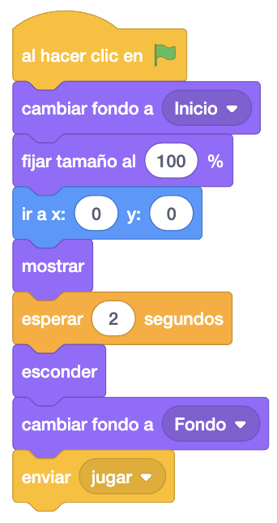
Pondremos ahora el objeto de las plataformas, ocultándolo al principio del juego y mostrándolo cuando empecemos a jugar. Lo mismo haremos con las escaleras.
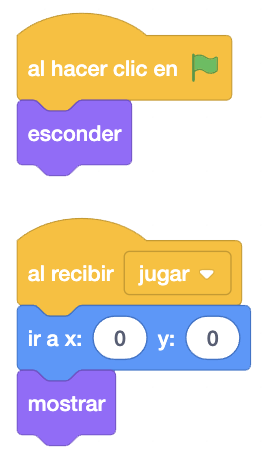
Ahora colocaremos al gorila en la parte superior izquierda y empezaremos a moverlo golpeándose el pecho. Como este movimiento lo vamos a hacer varias veces, lo encapsularemos en un bloque de programación que llamaremos "Golpe Pecho".
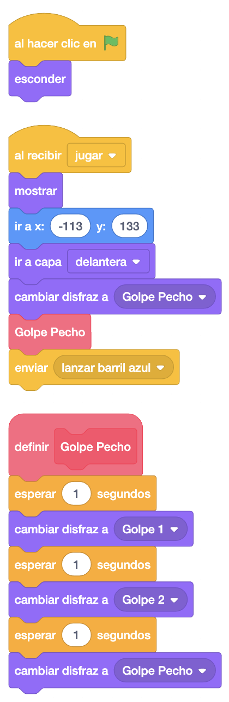
Después del primer golpe, lanzaremos el barril azul. Para ello programaremos el barril para que al recibir el
mensaje de lanzarlo, aparezca y vaya bajando poco a poco, rebotando en cada una de las plataformas.
Al llegar a la última plataforma, el barril se pondrá de lado e irá botando hasta el final, donde después
colocaremos el barril de gasolina.
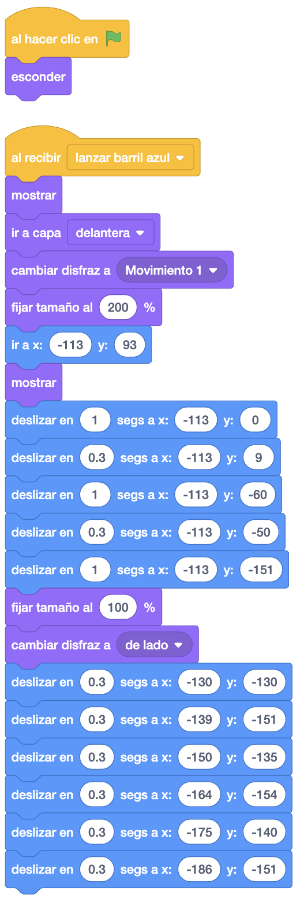
Vamos a hacer que el barril azul al caer vaya girando. Volveremos a programar que al recibir el mensaje de lanzar el barril, iremos cambiando el disfraz entre los dos que tiene.
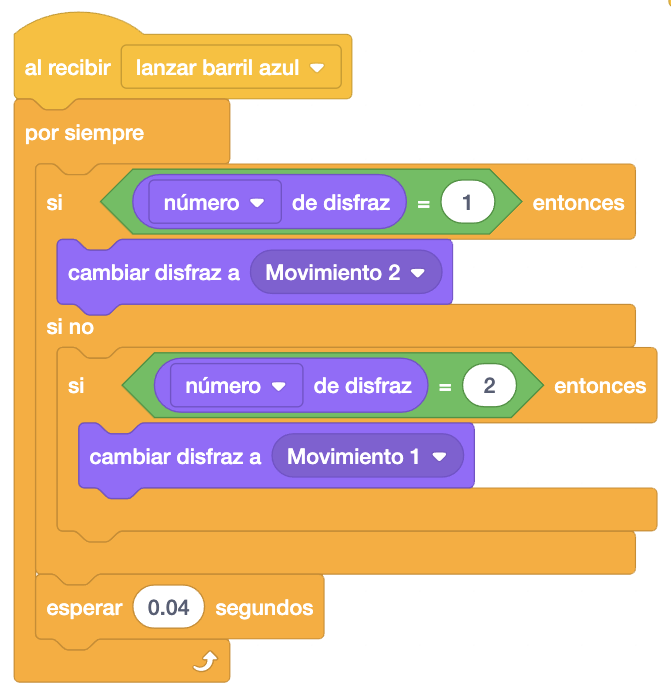
Colocaremos el barril de gasolina en la parte inferior izquierda, al final de la última plataforma.
Esperaremos a que lo toque el barril azul para enviar un mensaje ya que al tocar este barril programaremos
acciones en varios objetos.
En este propio objeto barril de gasolina, simularemos que se enciende cambiando disfraces.
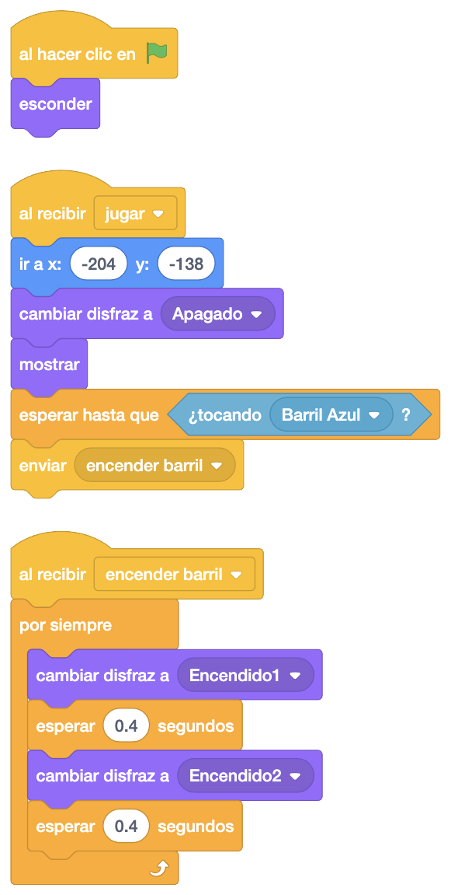
En el barril azul, también programaremos qué al recibir el mensaje de encender el barril, esconderemos dicho barril azul.
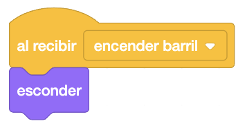
Vamos a programar ahora a la princesa, para que se muestre cuando empecemos a jugar y se mueva en la zona en
la que está.
Mientras se está moviendo, cambiaremos el disfraz (esta parte la sacaremos a un nuevo bloque).
Crearemos una variable "Dirección" para saber si se mueve a la derecha o a la izquierda. SI llegamos a una
posición a la derecha, cambiaremos la dirección a la izquierda y viceversa.
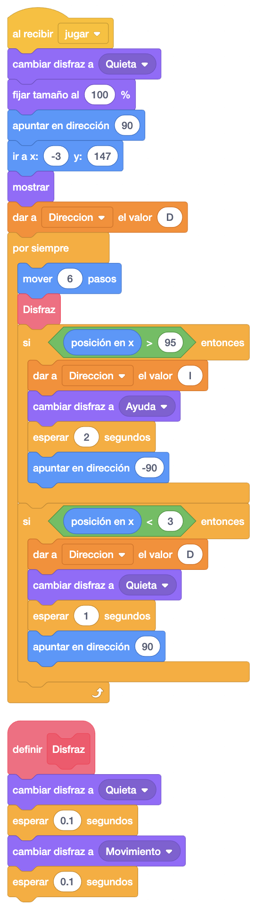
Ahora programaremos a Mario poco a poco. Lo primero será inicializar a Mario junto con las variables que vamos a utilizar.
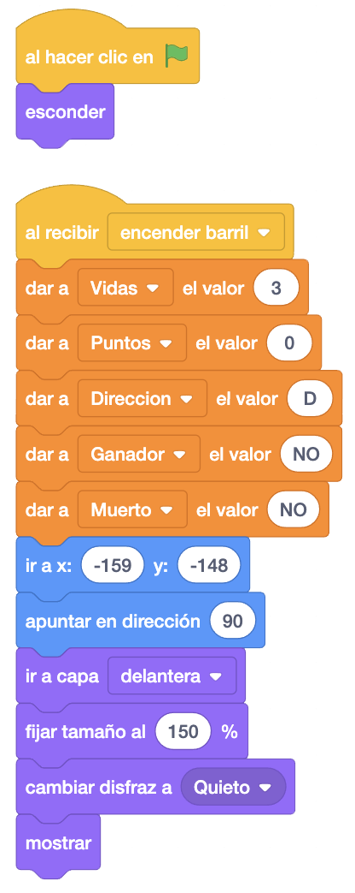
Ahora vamos a hacer una especie de gravedad para Mario. Para ello, controlaremos si estoy tocando las
escaleras y si estamos tocando las plataformas o no.
En el caso en el que no estemos tocando ninguno de los dos objetos, se supone que estamos en el aire. En este
caso, haremos caer a Mario hasta la plataforma.
Además, sin tocar las plataformas, si tocamos las escaleras y no está pulsada la flecha arriba también haremos
esa gravedad.
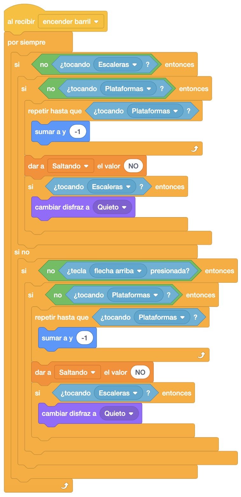
Ahora haremos el movimiento de Mario. Cada vez que nos movamos a la derecha y a la izquierda, además de
avanzar, al estar las plataformas inclinadas, tendremos que subir un pixel. En el caso de estar por encima de
la plataforma, la propia gravedad hará caer a Mario a la plataforma.
En el caso de vayamos a la izquierda, avanzaremos hasta el barril de gasolina, sin sobrepasarlo.
En el caso del salto, solo lo haremos siempre que estemos tocando las plataformas. Haremos un contador de 6
para que vaya subiendo poco a poco y en cada pasada del bucle aumentaremos la "Y" en 6 pixeles.
Para poder subir por las escaleras, al pulsar la tecla arriba, si estamos en una escalera, subimos hasta que
toquemos la plataforma. En cuanto la toquemos, daremos un pequeño salto para colocarnos encima de la misma.
Finalmente, guardaremos las posiciones de Mario.
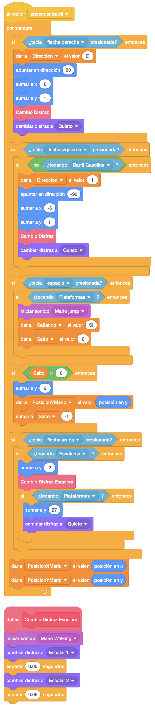
Ahora toca que cuando Mario llegue a la princesa, termine el juego, pero antes, mandará un mensaje de "Game Over" para mostrar el mensaje final y ocultar los objetos.
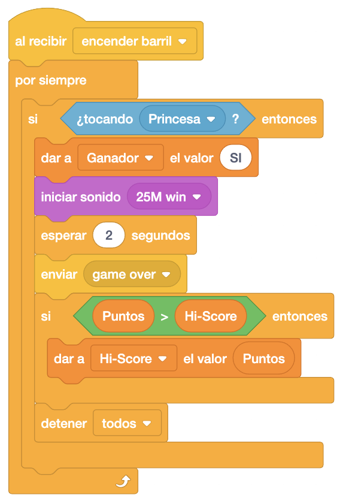
Cambiaremos en la princesa también un poco el código para que solo se mueva cuando no haya tocado a Mario, y que cuando lo toque, cambie el disfraz al disfraz con el corazón.
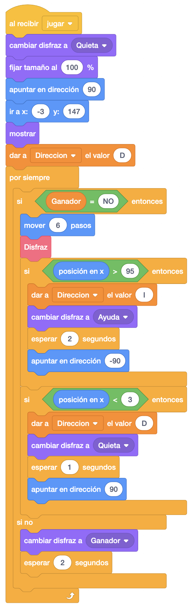
Continuaremos con la programación del barril marrón que lanza el gorila. Iremos primero al gorila, donde
continuaremos con la programación que hicimos al recibir el mensaje "Jugar".
El gorila se dará un par de golpes más en el pecho antes de lanzar el barril marrón (que sacaremos a un nuevo
bloque).
Luego repetiremos la acción de lanzar el barril y de forma aleatoria, nos daremos varios golpes en el pecho
para espaciar los barriles.
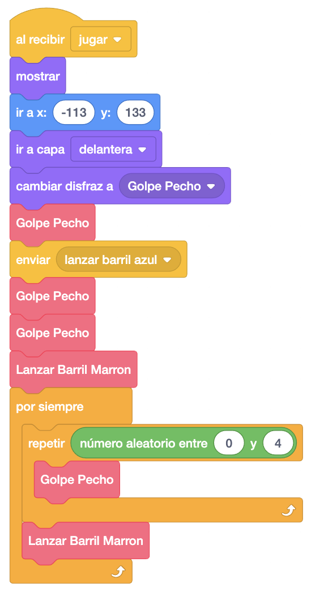
En el bloque de lanzar el barril marrón, cogeremos el barril y lo lanzaremos, enviando un mensaje "Lanzar Barril Azul".
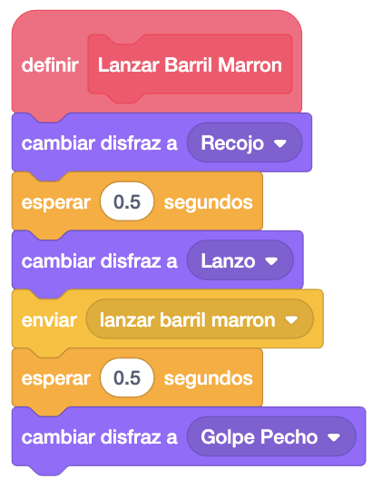
En el barril marrón, además de inicializarlo, programaremos el mensaje "Lanzar Barril Marrón" para hacer un clon del barril y empezar a moverlo por la plataforma.
Como la creación del barril la haremos al recibir el mensaje, este mensaje es recibido por el objeto barril
marrón original y todos los clones, con lo que, si no ponemos nada, cada vez que mandemos el mensaje, creará
un clon por cada clon que haya en ese momento, creando un número exponencial de clones.
Para evitar esto, tenemos que poner una condición que solo cumpla el objeto original y no los clones. Esa
condición será la posición, ya que el objeto original es el único que no se mueve de la posición inicial en la
que se coloca.
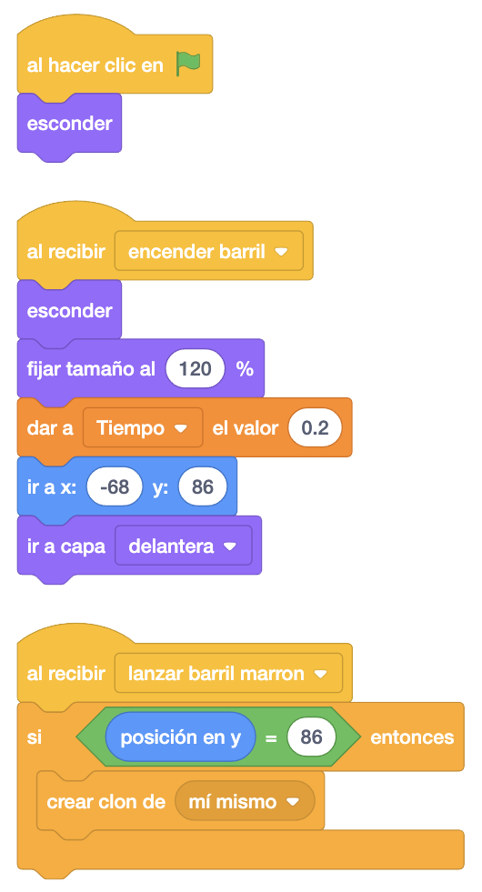
Continuaremos con el movimiento del barril. Crearemos una variable que indicará la dirección que lleva el
barril para moverlo en un sentido o en el otro.
Como la plataforma está inclinada, iremos pegándolo a la misma simulando una pequeña gravedad del barril.
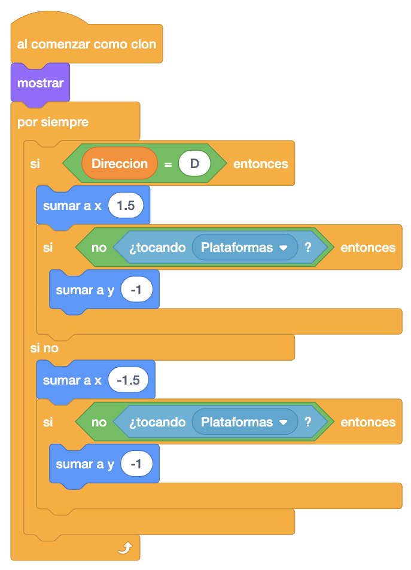
Para cambiar de dirección lo haremos por las coordenadas de la pantalla.
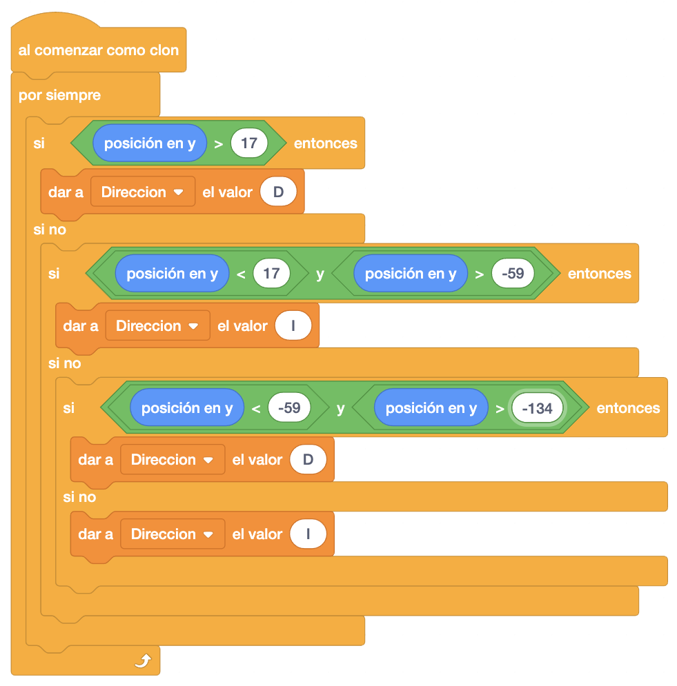
Para que caiga de una plataforma a otra, lo controlaremos por posición y haremos un pequeño bote en la
siguiente plataforma.
Al llegar al barril de gasolina, eliminaremos el clon. Además, iremos guardando continuamente la posición de
cada uno de los barriles.

Vamos a darle efecto de movimiento al barril. Para ello iremos cambiando entre los disfraces que tiene dependiendo de la dirección que lleve.
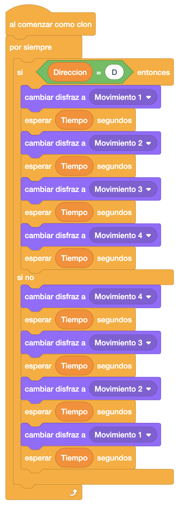
Ahora vamos a programar cuando el barril atropella a Mario. Le quitaremos una vida, marcaremos una variable para saber que Mario está momentáneamente muerto y mandaremos un mensaje para que lo reciba Mario.
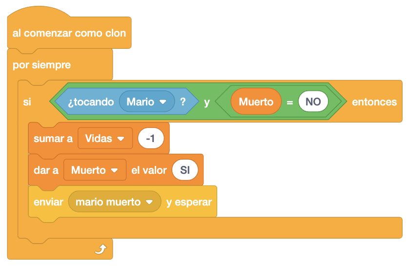
En Mario, al recibir el mensaje, haremos que Mario muera, volviendo a su posición inicial y volviendo a marcar la variable que está de nuevo vivo.
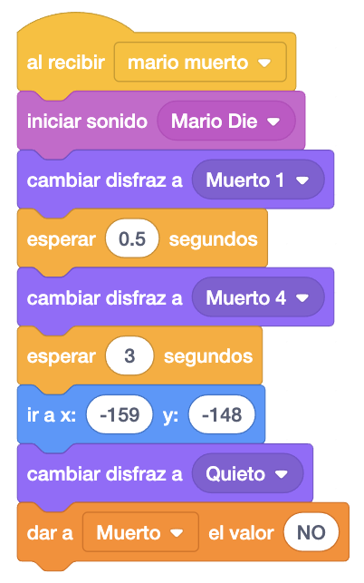
Colocaremos ahora las tres vidas de Mario, representadas por tres objetos de él mismo. Colocaremos las tres y las mostraremos al principio.
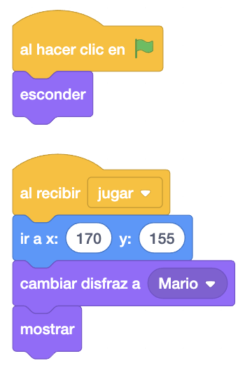
Programaremos que cada vez que matemos a Mario, evalúe si tiene que desaparecer o no, controlando el número de vidas.
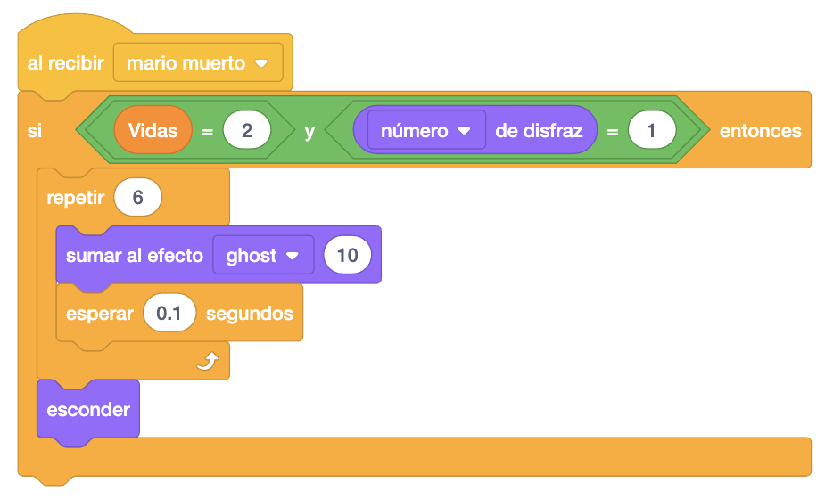
En el caso de la última vida, además enviaremos "Game Over", miraremos si se ha batido el récord y terminaremos el juego.
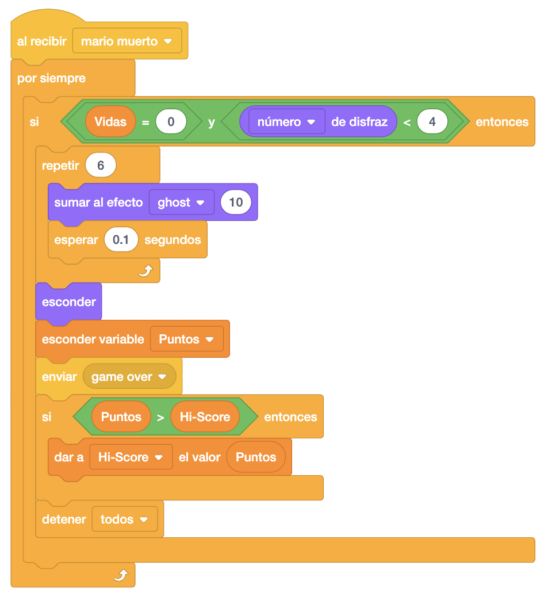
Añadiremos en los objetos plataforma, escaleras, Donkey Kong, barril de gasolina, princesa, Mario y barril, que al terminar con el "Game Over", escondamos el objeto o eliminemos el clon.
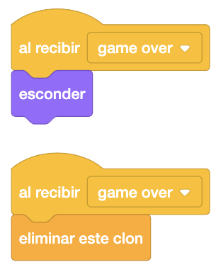
Vamos a hacer ahora que cuando Mario esté muerto, que no pueda moverse para que no pueda cambiar de disfraz
hasta que esté de nuevo vivo. Lo que haremos será que, en el Mario, donde estamos controlando las distintas
teclas pulsadas, realizar todo el código siempre que Mario no esté muerto.
Ahora, mostraremos el mensaje "Game Over" final, que lo haremos al recibir "Game Over".
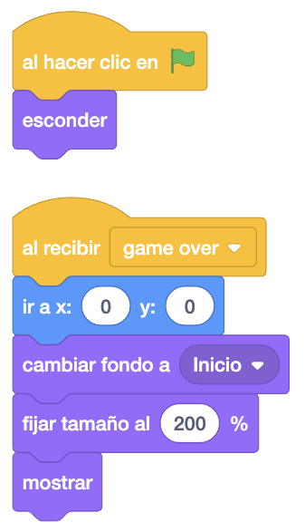
Para que al saltar el barril marrón acumulemos puntos, haremos lo siguiente. Tendrá que cumplir tres cosas:
- Que la posición "X" de Mario menos un poco, sea menor que la posición "X" del barril y que la posición
"X" de Mario más un poco, sea mayor que la posición "X" del barril (están en la misma coordenada "X").
Le añadimos un poco ya que las coordenadas "X" de ambos objetos puede que algunas veces no coincidan.
- Que la posición "Y" de Mario sea mayor que la posición "Y" del barril (Mario está saltando por encima
del barril).
- Que la posición "Y" de Mario menos un poco, sea menor que la posición "Y" del barril (Mario está
saltando, pero en la misma plataforma que el barril).
Esto lo programaremos en el propio barril marrón.

Pondremos ahora cinco dígitos para ir acumulando los puntos. Cada uno de los dígitos lo programaremos de la misma forma. Lo que tendremos que ver en cada dígito es que coincida con el dígito correspondiente de los puntos.
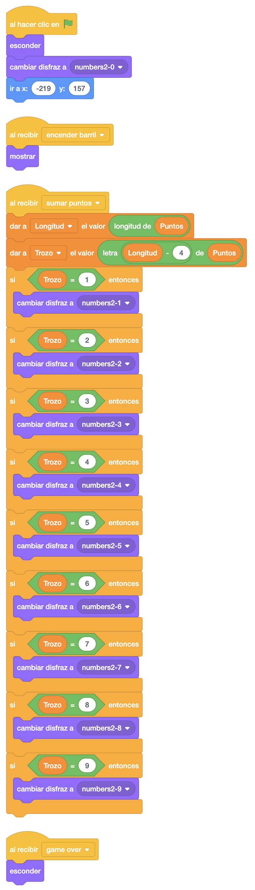
A la hora de acumular puntos, vamos a hacer el efecto de que los 100 puntos que vamos a acumular, salgan de Mario cuando salte el barril y vayan hacia el marcador. Utilizaremos el mensaje "Sumar Puntos" para programarlo en el objeto de los 100 puntos.
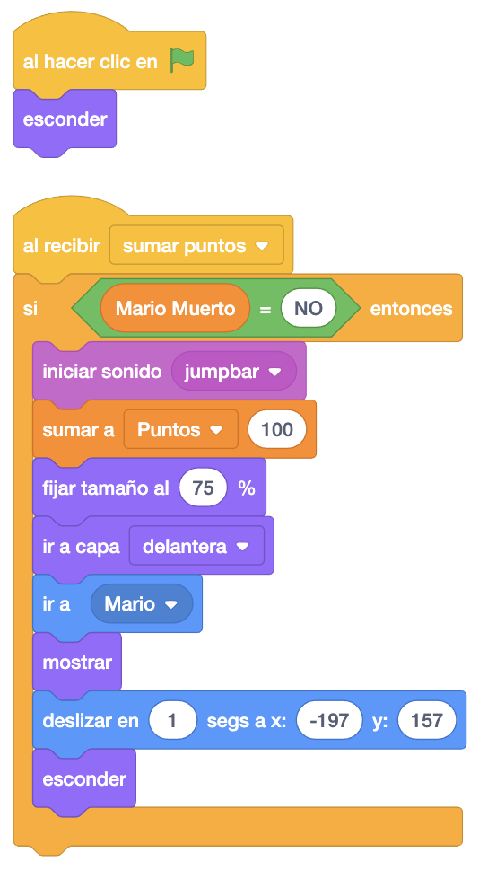
Por último, pondremos el récord. El objeto del texto, lo colocaremos en la pantalla como el resto de objetos.
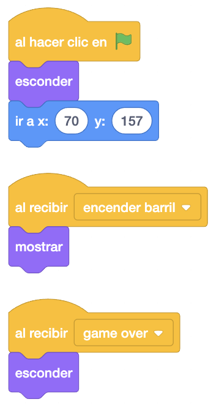
Pondremos ahora otros cinco dígitos para mostrar el récord. Cada uno de los dígitos lo programaremos de la misma forma. Lo que tendremos que ver en cada dígito es que coincida con el dígito correspondiente del récord.
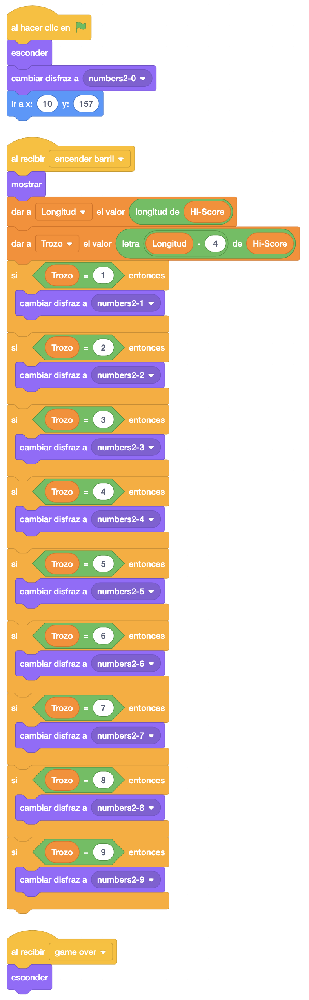
Y el juego quedaría así.
Para ver el juego terminado pulsa
aquí.
Para descargarte el juego terminado pulsa
aquí.